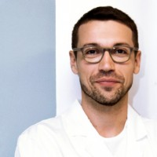
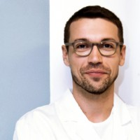
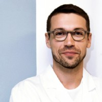

Náš tým
Při svých výletech ráda fotím. Díky fotkám si mohu kdykoliv připomenout všechny úžasná místa, kde jsem byla. Zde je malý výběr těch, na které jsem opravdu pyšná.
 

Nestátní zdravotnické zařízení - jsme poskytovatel zdravotních služeb v oblasti praktického a ambulantního vnitřního a dorostového lékařství.
Při svých výletech ráda fotím. Díky fotkám si mohu kdykoliv připomenout všechny úžasná místa, kde jsem byla. Zde je malý výběr těch, na které jsem opravdu pyšná.

Pracuji jako turistický průvodce pro cestovní kancelář Horalka. Organizujeme zájezdy do hor po celém světě. Většinu zájezdů, které organizuji, také na místě sama provázím. Na horách jsem nejšťastnější a jen v kanceláři bych nevydržela.
Pokud si nevyberete z naší nabídky, mohu vám pomoci s organizací výletu i mimo cestovní kancelář.
| Den | Čas |
|---|---|
| Pondělí | 8:00-10:30 |
| Úterý | 8:00-10:30 |
| Středa | 8:00-10:30 |
| Čtvrtek | 8:00-10:30 |
| Pátek | 8:00-10:30 |
| Sobota | 8:00-10:30 |
| Neděle | Zavřeno |

Neváhejte se na nás obrátit prostřednictvím našeho E-mailu, případně nám můžete zavolat v době ordinačních hodin.
MUDr. Jaroslava Petrová
Hlaváčova 822
Pardubice
530 02
IČO: 04440765
E-mail: ordinace@meditr.cz
Telefon: +420 461 056 844